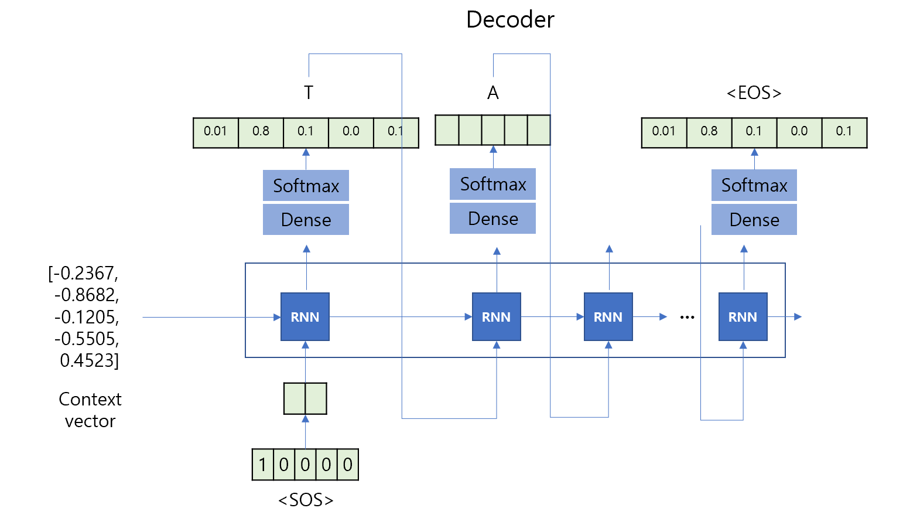
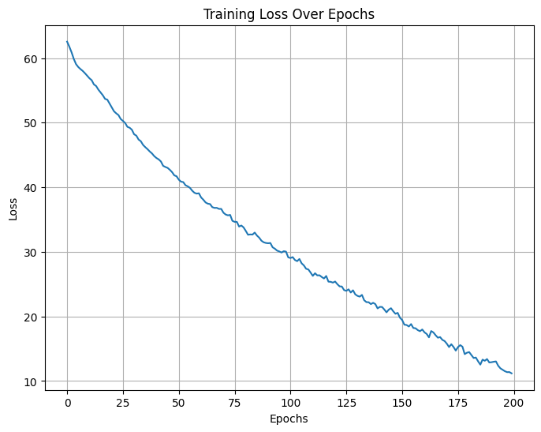
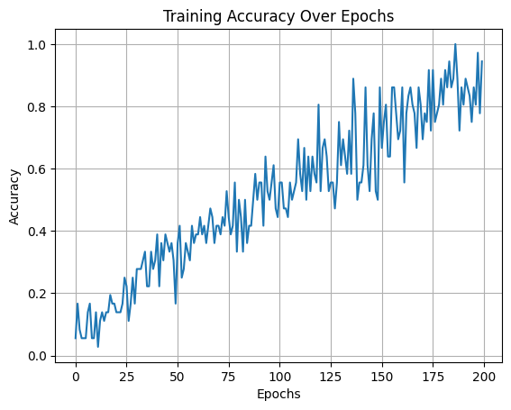

During inference (or sequence generation), the decoder produces the output sequence step-by-step
in an autoregressive manner — meaning each predicted token is fed back as input for the next step.
Initialize the decoder state
The decoder’s initial hidden state is set to the encoder’s final hidden state:
[ h_0^{dec} = h_T^{enc} ]
Start with a special <SOS> (start-of-sequence) token
This token is used as the first input to signal the beginning of generation.
Iterative decoding
For each time step ( t ):
Compute the new hidden state using the previous hidden state and input token:
[ h_t = f(h_{t-1}, x_t) ]
Generate the output probability distribution over the vocabulary:
[ P(y_t) = (W_o h_t + b_o) ]
Select the next token:
Greedy decoding: choose the most probable token
[ y_t = P(y_t) ]
or Beam search / Sampling for more diverse results.
Feed the predicted token ( y_t ) back into the decoder as input for the next step.
Termination
The generation stops when the model outputs an <EOS> (end-of-sequence) token
or when a predefined maximum length is reached.
In summary, the decoder generates one token at a time, using its own predictions to continue generating until the end-of-sequence is reached.
8.5 Inference

import torchimport torch.nn as nn# Define the Seq2Seq Decoderclass Seq2SeqDecoder(nn.Module):def__init__(self, vocab_size, embedding_dim, hidden_dim):super(Seq2SeqDecoder, self).__init__()self.embedding = nn.Embedding(vocab_size, embedding_dim)self.lstm = nn.LSTM(embedding_dim, hidden_dim, batch_first=True)self.fc = nn.Linear(hidden_dim, vocab_size)def forward(self, input_token, hidden, cell):# Embed the input token (shape: [batch_size, 1] -> [batch_size, 1, embedding_dim]) embedded =self.embedding(input_token)# Pass through LSTM (input shape: [batch_size, 1, embedding_dim]) output, (hidden, cell) =self.lstm(embedded, (hidden, cell))# Predict the next token (shape: [batch_size, vocab_size]) prediction =self.fc(output.squeeze(1)) # Remove time step dimensionreturn prediction, hidden, cell# Initialize the decoderdecoder = Seq2SeqDecoder(vocab_size, embedding_dim, hidden_dim)# Example usageinput_token = torch.tensor([[vocab["A"]]], dtype=torch.long) # Example token for batch of 1hidden = torch.zeros(1, 1, hidden_dim) # Example initial hidden state (batch_size=1)cell = torch.zeros(1, 1, hidden_dim) # Example initial cell state# Run the decoder for one stepoutput, hidden, cell = decoder(input_token, hidden, cell)print("Output shape:", output.shape) # Shape: [1, vocab_size]print("Output logits:", output)
## plot the loss and accuracyimport matplotlib.pyplot as plt ## plot the lossplt.figure(figsize=(8, 6))plt.plot(loss_all)plt.title("Training Loss Over Epochs")plt.xlabel("Epochs")plt.ylabel("Loss")plt.grid()plt.show()plt.plot(accuracy_all)plt.title("Training Accuracy Over Epochs")plt.xlabel("Epochs")plt.ylabel("Accuracy")plt.grid()plt.show()


It shows overfitting
Need discussions
Purpose of analysis
Types of source and target data
Data collection
Data size
# Load the modelmodel.load_state_dict(torch.load("seq2seq_model.pth", weights_only=False))# test the modelmodel.eval()total_loss =0total_accuracy =0for batch in test_dataloader: src, src_len, tgt, tgt_len = batch src, tgt = src.to(torch.device("cpu")), tgt.to(torch.device("cpu")) outputs = model(src, src_len, tgt, teacher_forcing_ratio=0) outputs = outputs[:, 1:].reshape(-1, vocab_size) # Skip <sos> token tgt = tgt[:, 1:].reshape(-1) # Skip <sos> token in targets loss = criterion(outputs, tgt) total_loss += loss.item()# Compute accuracyoutputs = outputs.argmax(dim=1)correct = outputs.eq(tgt)accuracy = correct.sum().float() / tgt.size(0)total_accuracy += accuracy## print the loss and accuracyprint(f"Test Loss: {total_loss:.4f}, Test Accuracy: {total_accuracy:.4f}")# Decode the outputdef decode_output(output, idx2vocab): decoded_output = [idx2vocab[idx] for idx in output]return decoded_output# Example usagesrc, tgt = test_dataset[6]# convert to tensorsrc = torch.tensor(src).unsqueeze(0)tgt = torch.tensor(tgt).unsqueeze(0)src_len = [len(src)]outputs = model(src, src_len, tgt, teacher_forcing_ratio=0)outputs = outputs.argmax(dim=2).squeeze(0).tolist()decoded_output = decode_output(outputs, idx2vocab)print("Source sequence:", [idx2vocab[idx] for idx in src.squeeze(0).tolist()])print("Target sequence:", [idx2vocab[idx] for idx in tgt.squeeze(0).tolist()])print("Predic sequence:", decoded_output)